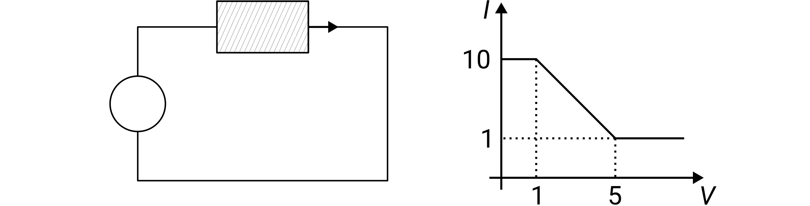
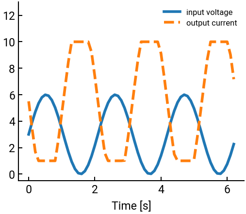

12. Electric circuit example#
Here is another engineering application in the context of electric circuits.
A circuit has the following current-voltage characteristics, i.e., a curve giving the output current \(I\) in amps as a function of the input voltage \(V\) in volts:

Given the input voltage \(V(t)\), write a script that computes the output current \(I(t)\). Test your code for the following input:
\[ V(t) = 3 + 3 \sin(3t) \quad \text{for}\ t \ge 0 \]
Use the time step \(\Delta t = 0.1\). Plot \(V(t)\) and \(I(t)\) on the same set of axes using different styles for \(t\) ranging between \(0\) and \(2\pi\) seconds.
import numpy as np
import matplotlib.pyplot as plt
t = np.arange(0, 2*np.pi, 0.1)
V = 3 + 3 * np.sin(3 * t)
I = np.zeros(V.shape)
for j in range(len(V)):
if V[j] < 1:
I[j] = 10
elif V[j] >= 1 and V[j] < 5:
I[j] = -9/4 * V[j] + 49/4
else:
I[j] = 1
"""another possible solution
I = -9/4 * V + 49/4
I[V < 1] = 10
I[V >= 5] = 1
"""
fig, ax = plt.subplots()
ax.plot(t, V, label="input voltage")
ax.plot(t, I, '--', label="output current")
ax.set(xlabel="Time [s]", ylim=[-0.5, 13])
ax.legend(fontsize=12) # make it smaller so it fits
plt.show()

Note
Notice how label= in the plotting function and ax.legend() work together to label different lines!